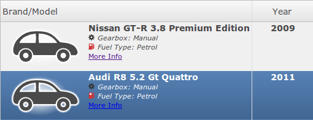
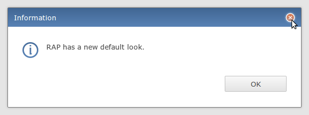
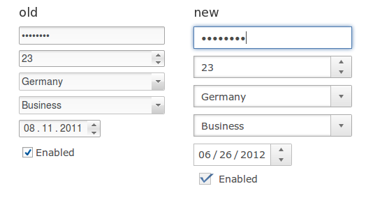

We introduced a new API to configure and start RAP applications programmatically.
This is an alternative to registering application entrypoints, themes, etc. as extensions.
With this new API it is now possible to write very write lightweight applications that do not
depend on the Eclipse UI stack (org.) or the
the Equinox extension registry.
To configure an application, implement the new interface
org.:
public class SimpleConfiguration implements ApplicationConfiguration {
public void configure( Application application ) {
application.addEntryPoint( "/simple", SimpleEntryPoint.class, null );
application.addEntryPoint( "/other", AnotherEntryPoint.class, null );
application.addServiceHandler( "custom.id", new MyServiceHandler() );
...
}
}
An application can be started programmatically using an ApplicationRunner:
ApplicationConfiguration configuration = new SimpleConfiguration(); ApplicationRunner runner = new ApplicationRunner( configuration, servletContext ); runner.start();
... or registered as an OSGi service (see below).
A new bundle org. has been introduced
that integrates RAP with OSGi.
This bundle is now required for every RAP application in an OSGi environment, including
applications that use the Eclipse workbench.
When an ApplicationConfiguration is registered as an OSGi service, the rwt.osgi
bundle will auto-start an application with this configuration.
By default, the application is started in the root context path.
Using a service property, a custom context path can be selected.
The name of this service property is kept in the constant
org..
Here's an example of an application configuration registered as a declarative service using the context path example:
<scr:component xmlns:scr="http://www.osgi.org/xmlns/scr/v1.1.0">
<implementation class="com.example.SimpleConfiguration"/>
<service>
<provide interface="org.eclipse.rwt.application.ApplicationConfiguration"/>
</service>
<property name="contextName" type="String" value="example"/>
</scr:component>
Alternatively, applications can also be started programmatically using the
ApplicationLauncher, which is made available as a service by the rwt.osgi bundle.
ApplicationLauncher launcher = ... (acquire from service) HttpService httpService = ... (acquire from service) launcher.launch( configuration, httpService, httpContext, contextName, contextDirectory );
RWT applications are now also configured using the new ApplicationConfiguration API.
The former init parameters have been replaced by one parameter that accepts the fully qualified
class name of an ApplicationConfiguration implementation.
The name of this init parameter is kept in the constant
ApplicationConfiguration..
Here's an exemplary web.xml snippet:
<context-param> <param-name>org.eclipse.rap.applicationConfiguration</param-name> <param-value>com.example.ExampleConfiguration</param-value> </context-param> <listener> <listener-class>org.eclipse.rwt.engine.RWTServletContextListener</listener-class> </listener>
The RWTServletContextListener needs to be registered so that RWT is notified when
the servlet context is created.
For more information, check the
developer's guide.
Some properties of the application, such as the theme, the page title, or the favicon, can
already be customized in a branding extension.
The new ApplicationConfiguration API provides a more general concept for those customizations,
accepting a simple property map for entry points.
The property names for the default web client are defined by the new class
org..
Other client implementations can provide their own properties.
Here's an example how to use it:
Map<String, String> properties = new HashMap<String, String>(); properties.put( WebClient.THEME_ID, "com.example.mytheme" ); properties.put( WebClient.FAVICON, "images/favicon.png" ); application.addEntryPoint( "/example", entryPointFactory, properties );
So far, entrypoints have been registered with a name and have been available at a URL like this:
http://hostname/context/rap?startup=<entryPointName>
Both, the servlet name “rap” and the parameter name “startup” were hard-coded in RWT.
A branding had to be used to map the entrypoint to a custom URL.
Now, the extension point org.
supports a new attribute path that allows to register an entrypoint for a given
path:
<extension
point="org.eclipse.rap.ui.entrypoint">
<entrypoint
id="org.example.exampleEntryPoint"
class="org.example.ExampleEntryPoint"
path="/example" />
</extension>
This example shows how an entrypoint is registered for the path /example. The application will be available at:
http://hostname/context/example
This method is encouraged and meant to replace the registration using a parameter.
Also with the new ApplicationConfiguration API, entrypoints are registered by path.
In order to provide full compatibility to SWT, the SWT threading model has to be emulated very closely. To make this possible, RWT starts a separate UI thread for every user session and executes all application code in this thread by default. This carries the consequence that application code cannot directly access JEE transaction or security contexts, which are only available on the original request thread.
However, this exact compatibility to SWT is only required by code that uses SWT's few blocking APIs. The most obvious case are blocking dialogs (i.e. calling dialog.open() will suspend code execution until the dialog is closed by the user, and then return a value). The Eclipse workbench needs full SWT compatibility, but most other applications benefit from a simple, lightweight operation mode that does not start these separate threads. Instead of using the blocking APIs, those applications can use a callback pattern.
To support those lightweight applications, RWT now has two exchangeable operation modes called SWT compatibility and JEE compatibility. The JEE compatibility mode is encouraged for new applications that do not use the workbench, because it is simpler, consumes less server resources and complies with the requirements of JEE. It is also the default for applications using the new ApplicationConfiguration API. The operation mode can be configured in the ApplicationConfiguration:
public void configure( Application application ) {
application.setOperationMode( OperationMode.SWT_COMPATIBILITY );
...
}
An important consequence of the new JEE compatibility mode is that the method
Display.sleep() is not supported.
Applications must omit the SWT main loop in the entrypoints.
Applications that are started using extension points always run in the SWT compatibility mode.
For more detailed information, please check the developer's guide.
With the new JEE compatible mode, RWT also supports transparent session failover. This enables RWT standalone applications to run in a high-availability cluster.
In order to replicate sessions between cluster nodes, all classes in RWT whose instances will have session scope are now serializable. Note that application code must also be prepared for clustering by making all objects that live in the session scope serializable.
Serializable RWT sessions can also be used to swap inactive sessions onto disk and thereby releasing the memory consumed by them. This allows for infinite session timeout settings and saves users from annoying 'the session has timed out' messages.
Clustering of OSGi applications is not yet supported. For further details, please check the Cluster wiki page.
The communication between server and client has been replaced with a new, JSON-based format. With this new protocol, RAP now provides for exchangeable client implementations. RAP clients can be developed in any language and for any platform. The new protocol also makes the responses much more readable and eases debugging.
The exact format is described in the RAP Protocol wiki page.
The UI callback was redesigned and made more robust.
When a callback request fails, the client sends a new callback request to re-establish the broken callback connection. To avoid unnecessary load on the client, retry requests are sent with a suitable delay.
On some servlet engines, an active UI callback prevented the session from expiring. This has been solved so that applications can activate the UI callback without interfering with the session timeout.
The Server Push wiki page summarizes how the mechanism works internally.
The fragment org. is no longer needed
and has been removed.
The contents have been merged into the org.
bundle.
The q07 fragment had originally been introduced to be able to support different versions of the qx client library. Meanwhile, we decided to maintain and evolve our own copy of this client library (bug 320993), so the fragment is not needed anymore. Moreover, the new protocol provides a more flexible way to support alternative clients.
The RWT OSGi integration bundle org.
has been added to the RAP runtime.
Please remember to include this bundle in your configuration for all OSGi-based applications.
The RAP 1.5 target platform is based on Eclipse 4.2 (Juno). However, RAP does not yet provide an integration with the 4.2 workbench. The RAP implementation of the Eclipse workbench is still based on 3.x.
There are a couple of important changes to the target platform.
javax. bundle has a 3.0 version, it exports packages
as version 2.6.0 to comply with the OSGi versioning rules
(see bug 360245).
org.mortbay.jetty to org.eclipse.jetty.
Since the Jetty project decided to split their code into smaller modules
there are now seven Jetty bundles required instead of two.
org.) to support it.
Please adapt your launch configurations to these changes as needed.
The runtime repository now contains two different features: The first one contains all bundles provided by the RAP project. The other feature provides a selection of bundles from the Juno platform that are required for a complete RAP target platform. If you want to create a simple RAP target platform, you'll need both.
This split will make it easier to work with mixed targets. If you already have the Equinox Core SDK and Jetty, you'll only need to add RAP itself. This way, you prevent duplicate bundles in your target platform.
For a selection of widgets, simple HTML markup is now accepted in the setText()
method. Currently supported widgets are TableItem, TreeItem,
List, Label and CLabel.

To enable markup support for a widget, use the new constant
RWT.MARKUP_ENABLED in the setData() method.
This must be done directly after creating the widget and cannot be changed later.
Here's a code example:
Table table = new Table( parent, SWT.BORDER ); table.setData( RWT.MARKUP_ENABLED, Boolean.TRUE ); TableItem item = new TableItem( table, SWT.NONE ); item.setText( "Some <em>text</em> with <strong>markup<strong>" );
The markup will be validated on the server. Currently, the following HTML elements area allowed:
<em>,
<strong>,
<big>,
<small>,
<sup>,
<sub>,
<del>,
<ins>, etc.
<br/>
<img src="images/example.png" width="16" height="16" />,
width and height are obligatory
<a href="http://eclipse.org">Eclipse</a>.
To open the linked page in a new tab, you can use the target
attribute.
See the JavaDoc for RWT.MARKUP_ENABLED for further information.
You can try it out in our updated demo on the
Rich Labels page.
Check out the
Table with markup
page as well.
When you use markup in a Table or a Tree, you may want to set a fixed item height manually.
To do so, you can use the new setData() constant
RWT.CUSTOM_ITEM_HEIGHT:
table.setData( RWT.CUSTOM_ITEM_HEIGHT, Integer.valueOf( 62 ) )
A custom item height must be set directly after creating the widget and cannot be changed later.
The server-side part of the Tree widget was considerably improved and optimized. Now, a Tree with SWT.VIRTUAL style can handle huge item counts without performance degradation.
For a live demo, check out the tab called Complex Data in our Examples demo.
It's now possible to exclude a given number of leftmost table columns from horizontal scrolling. This is very useful for tables that have a lot of columns, with the first column(s) containing some kind of heading or key value (e.g. a person's name) that should always be visible.

For more details, see the JavaDoc on RWT.FIXED_COLUMNS.

TableColum and TreeColumn now respect line breaks.
No special setting is required. When the text of a header contains a linebreak character
(\n), the line break will be rendered and the column height will be adjusted
automatically.
The Browser widget provides two methods to execute JavaScript,
execute() and evaluate().
Both methods are blocking and won't work with the new JEE_COMPATIBILITY mode.
Therefore, a new utility class BrowserUtil has been introduced to evaluate
JavaScript in a Browser widget in a non-blocking way.
Instead of waiting for the script to be executed, you provide a
BrowserCallback implementation that will be notified when the evaluation has
completed:
Browser browser = new Browser( parent, SWT.NONE );
...
BrowserUtil.evaluate( browser, script, new BrowserCallback() {
public void evaluationSucceeded( Object result ) {
}
public void evaluationFailed( Exception exception ) {
}
} );
Finally, we support the SWT.ARROW style flag for Button.
This style is used together with one of SWT.TOP, SWT.BOTTOM,
SWT.LEFT, or SWT.RIGHT to create buttons with an arrow symbol.
Of course, the style of arrow buttons can be configured in a theme:
Button[ARROW] {
border: 1px solid #bdbdbd;
padding: 10px;
}
Button-ArrowIcon[UP] {
background-image: url( theme/images/arrow-up.png );
}
The RWT.ACTIVE_KEYS constant has been
introduced in RAP 1.4
to allow for key bindings.
Now this constant can also be used to limit the keys that will trigger a key event on a
single widget.
This means that when a key-listener is attached to a widget,
it's now possible to choose beforehand which keys will trigger events.
This can drastically reduce the traffic caused by key-events.
For more details, see the JavaDoc on RWT.ACTIVE_KEYS.
The new constant RWT.CANCEL_KEYS can be used to specify a
list of keys to be cancelled.
Instead of dynamically cancelling events by setting the doit-flag to
false in a KeyListener, this allows to do the same thing in a
static way.
When CANCEL_KEYS are defined, this will suppress the default operation associated with these
keys, e.g. changing focus on TAB or closing a popup with ESC.
Note that some browser shortcuts can not be suppressed, like changing the browser tab with
CTRL+TAB.
Like RWT.ACTIVE_KEYS, this can be done either globally, using
Display.setData(), or on a
per-widget base
using Widget.setData().
For more details, see the JavaDoc on RWT.CANCEL_KEYS.
We decided to replace the support for dynamically vetoing key and traverse events
in favor of the static approach described above.
With this change, setting the doit-flag on KeyEvents and
TraverseEvents has
no longer any effect
in RAP.
As a replacement, the RWT.CANCEL_KEYS constant should be used.
JFace cell editors have already been adapted to this change.
We've introduced KeyEvents and TraverseEvents in RAP 1.2 to be
able to support JFace cell editors.
There were multiple issues remaining that we could never overcome,
such as synchronous HTTP requests not working correctly in some browsers,
or security-restrictions for certain keys for in others.
Over time, we've realized that dynamically preventable key and traverse events are not
going to work fully and reliably in all browser.
We dislike taking functionality away, but in this case we are convinced that the improvements are more valuable than the loss. We were able to heavily improve the key event handling and to fix several issues regarding missing events or wrong values. The change also allowed us to send key events in asynchronous HTTP requests in all browsers, making the client UI more responsive.
RAP 1.5 got a new default look. The new theme aims at bringing a modern, decent look into RAP applications with more white space and subtle usage of roundings, shadows and gradients. To achieve this, the themability of many RWT widgets has been extended by adding missing CSS properties.
 
The RAP default theme is now an equitable theme, and it is no longer used as a fallback for custom themes. Instead of the default theme, all theming properties now have a default value which is used as a fallback in case the theme does not define a value for this property.
Unlike the RAP default theme, these fallback values will not change. They are chosen to be plain values without any effects, i.e. no gradients, rounded borders, or shadows, just plain black-and-white. With this change, custom themes will be more stable. Changes to the RAP default theme will not affect custom themes anymore.
The default values are still defined in the respective
<Widget>.default.css files, and the RAP default theme is now contained
in a file of its own.
For details, see
bug 363736.
The Theming now supports text shadows for most widgets that display text: Shell, Label, CLabel, CTabFolder, Button, DateTime, ExpandBar, Group, Link, List, Spinner, TabFolder, Menu, ToolTip, Combo, CCombo, Tree, Table, Text, and ToolBar

Text shadows are not available in Internet Explorer due to this browser's lack of support for this feature. Transparency for text shadows is supported using the rgba notation for color. Example:
Button {
text-shadow: 0 1px 0 rgba( 0, 0, 0, 0.3 );
}
The theming for Shell and Composite now supports these additional
animations:
flyInTop, flyInRight, flyInBottom, flyInLeft,
flyOutTop, flyOutRight, flyOutBottom, flyOutLeft
In addition, Composite now also supports
fadeIn, fadeOut, slideIn, and slideOut.
The animations are shown when the widget either appears or disappears, respectively. Since the widget's children are animated together with its parent, it's now possible to animate any widget by placing it in a Composite. It should be noted that the animations may not run smoothly in older browsers, or when the Shell/Composite is very bulky. Using fadeIn/Our or slideIn/Out in IE7 or 8 can cause minor rendering glitches during the animation, depending on the contained widgets and their theming.
The FileUpload widget is no longer bound to the theming of the Button theming
but can be styled separately.
All CSS properties that are supported for Button are now also supported for the
new FileUpload CSS element.
Internet Explorer 9 was a significant improvement over previous versions, finally catching up to other browsers regarding performance and compatibility. RAP can now fully utilize all its new features (HTML5, CSS3, SVG) by switching to standard rendering in IE9 (as opposed to quirksmode used for previous IE versions). This gives RAP applications a noticeable performance-boost in IE9, especially when using GC for drawing complex graphs.
As technology marches on, we also decided to no longer officially support IE6 in RAP 1.5. RAP 1.4 will continue to support it.
The key event fixes mentioned above also allowed us to repair our
ContentProposalAdapter implementation.
Now we can provide a fully functional content proposal that can be operated completely by
the keyboard on all browsers.
Combined with the RWT.ACTIVE_KEYS constant, the requests can be limited to
those needed for opening the content proposal.

Our source code has moved from CVS to Git. The CVS still exists but is now read-only. If you used to with RAP source code from CVS, check the source code page for the new repositories.